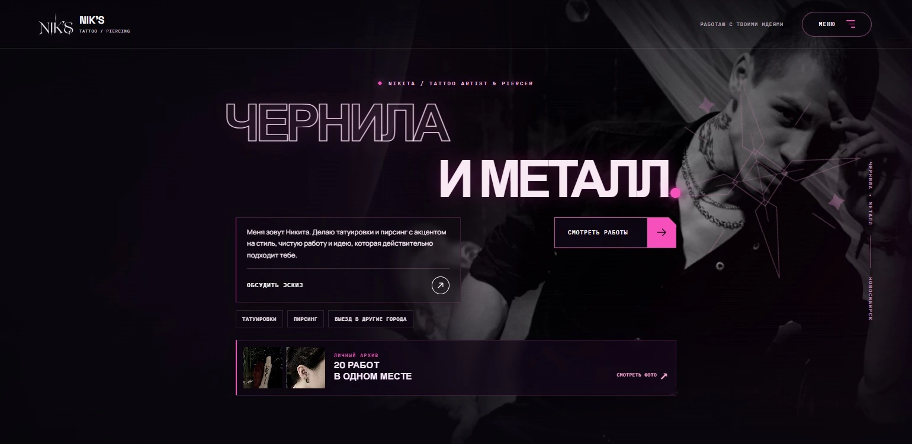

Задача
Показать направления татуировок и пирсинга, примеры и способы записи.
Сайт для презентации татуировок и пирсинга: сильная визуальная подача, галерея работ и удобная навигация. Интерфейс помогает сосредоточиться на портфолио.
Что сделано
Тёмная основа, выразительные фотографии и понятные сценарии просмотра.
Татуировки и пирсингСмотреть сайт